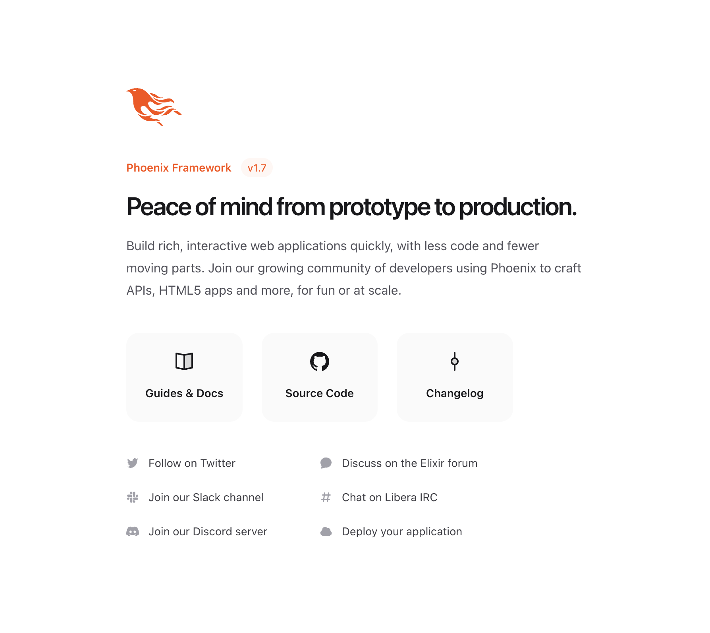

Instalação e Execução
Existem dois mecanismos para iniciar uma nova aplicação Phoenix: a opção express, suportada em alguns sistemas operacionais, e via mix phx.new. Vamos verificar.
Phoenix Express
Um único comando vai colocá-lo em funcionamento em segundos:
Para macOS/Ubuntu:
$ curl https://new.phoenixframework.org/myapp | sh
Para Windows PowerShell:
> curl.exe -fsSO https://new.phoenixframework.org/myapp.bat; .\myapp.batO comando acima instalará Erlang, Elixir e Phoenix, e gerará uma nova aplicação Phoenix. Também escolherá automaticamente PostgreSQL ou MySQL como banco de dados, e utilizará o SQLite como alternativa se nenhum dos anteriores estiver disponível. Uma vez que o comando acima for concluído, ele abrirá uma aplicação Phoenix, com os passos necessários para completar sua instalação.
O nome de sua aplicação Phoenix é retirado do caminho.
Se o seu sistema operacional não for suportado, ou se o comando acima falhar, não se preocupe! Você ainda pode iniciar sua aplicação Phoenix usando mix phx.new.
Via mix phx.new
Para criar uma nova aplicação Phoenix, você precisará instalar Erlang, Elixir e Phoenix. Veja o Guia de Instalação para mais informações. Se você compartilhar sua aplicação com alguém, essa pessoa também precisará seguir os passos do Guia de Instalação para configurar tudo.
Quando estiver pronto, você pode executar mix phx.new de qualquer diretório para iniciar nossa aplicação Phoenix. Phoenix aceitará um caminho absoluto ou relativo para o diretório do nosso novo projeto. Assumindo que o nome da nossa aplicação é hello, vamos executar o seguinte comando:
$ mix phx.new hello
Por padrão,
mix phx.newinclui várias dependências opcionais, por exemplo:
Ecto para comunicação com um armazenamento de dados, como PostgreSQL, MySQL e outros. Você pode pular isso com
--no-ecto.Phoenix.HTML, TailwindCSS e Esbuild para aplicações HTML. Você pode pular eles com as flags
--no-htmle--no-assets.Phoenix.LiveView para construir aplicações web em tempo real e interativas. Você pode pular isso com
--no-live.Leia o Guia de Tarefas Mix para a lista completa de coisas que podem ser excluídas, entre outras opções.
mix phx.new hello
* creating hello/config/config.exs
* creating hello/config/dev.exs
* creating hello/config/prod.exs
...
Fetch and install dependencies? [Yn]
Phoenix gera a estrutura de diretórios e todos os arquivos que precisaremos para nossa aplicação.
Phoenix promove o uso do git como software de controle de versão: entre os arquivos gerados encontramos um
.gitignore. Podemos iniciar nosso repositório comgit init, e imediatamente adicionar e commitar tudo o que não foi marcado como ignorado.
Quando terminar, ele nos perguntará se queremos que ele instale nossas dependências. Vamos dizer sim a isso.
Fetch and install dependencies? [Yn] Y
* running mix deps.get
* running mix assets.setup
* running mix deps.compile
We are almost there! The following steps are missing:
$ cd hello
Then configure your database in config/dev.exs and run:
$ mix ecto.create
Start your Phoenix app with:
$ mix phx.server
You can also run your app inside IEx (Interactive Elixir) as:
$ iex -S mix phx.server
Uma vez que nossas dependências são instaladas, a tarefa nos pedirá para mudar para o diretório do nosso projeto e iniciar nossa aplicação.
Phoenix assume que nosso banco de dados PostgreSQL terá uma conta de usuário postgres com as permissões corretas e uma senha "postgres". Se esse não for o caso, consulte o Guia de Tarefas Mix para saber mais sobre a tarefa mix ecto.create.
Ok, vamos tentar. Primeiro, vamos mudar para o diretório hello/ que acabamos de criar:
$ cd hello
Agora vamos criar nosso banco de dados:
$ mix ecto.create
Compiling 13 files (.ex)
Generated hello app
The database for Hello.Repo has been created
Caso o banco de dados não possa ser criado, consulte os guias para o mix ecto.create para solução geral de problemas.
Nota: se esta é a primeira vez que você está executando este comando, o Phoenix também pode pedir para instalar o Rebar. Prossiga com a instalação, pois o Rebar é usado para construir pacotes Erlang.
E finalmente, vamos iniciar o servidor Phoenix:
$ mix phx.server
[info] Running HelloWeb.Endpoint with Bandit 1.5.7 at 127.0.0.1:4000 (http)
[info] Access HelloWeb.Endpoint at http://localhost:4000
[watch] build finished, watching for changes...
...
Se optarmos por não deixar o Phoenix instalar nossas dependências quando geramos uma nova aplicação, a tarefa mix phx.new nos solicitará que tomemos as medidas necessárias quando quisermos instalá-las.
Fetch and install dependencies? [Yn] n
We are almost there! The following steps are missing:
$ cd hello
$ mix deps.get
Then configure your database in config/dev.exs and run:
$ mix ecto.create
Start your Phoenix app with:
$ mix phx.server
You can also run your app inside IEx (Interactive Elixir) as:
$ iex -S mix phx.server
Por padrão, Phoenix aceita requisições na porta 4000. Se apontarmos nosso navegador favorito para http://localhost:4000, devemos ver a página de boas-vindas do Phoenix Framework.

Se sua tela se parece com a imagem acima, parabéns! Agora você tem uma aplicação Phoenix funcionando. Caso você não consiga ver a página acima, tente acessá-la via http://127.0.0.1:4000 e posteriormente verifique se seu sistema operacional definiu "localhost" como "127.0.0.1".
Para pará-lo, pressionamos ctrl-c duas vezes.
Agora você está pronto para explorar o mundo fornecido pelo Phoenix! Veja nossa página da comunidade para livros, screencasts, cursos e mais.
Alternativamente, você pode continuar lendo estes guias para ter uma rápida introdução a todas as partes que compõem sua aplicação Phoenix. Se for o caso, você pode ler os guias em qualquer ordem ou começar com nosso guia que explica a estrutura de diretórios do Phoenix.